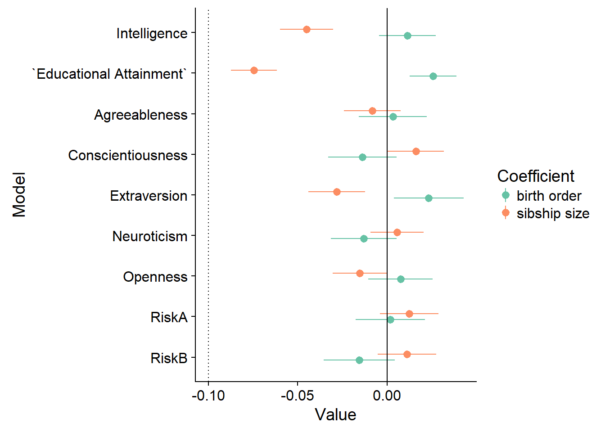

Birth Order Effects
Helper
source("0_helpers.R")## Warning: package 'rmarkdown' was built under R version 3.4.3## Warning: package 'knitr' was built under R version 3.4.3##
## Attaching package: 'formr'## The following object is masked from 'package:rmarkdown':
##
## word_document## Warning: package 'lubridate' was built under R version 3.4.3##
## Attaching package: 'lubridate'## The following object is masked from 'package:base':
##
## date## Warning: package 'stringr' was built under R version 3.4.3## Loading required package: carData## lattice theme set by effectsTheme()
## See ?effectsTheme for details.##
## Attaching package: 'data.table'## The following objects are masked from 'package:lubridate':
##
## hour, isoweek, mday, minute, month, quarter, second, wday, week, yday, year## The following objects are masked from 'package:formr':
##
## first, last## Loading required package: Matrix##
## Attaching package: 'lmerTest'## The following object is masked from 'package:lme4':
##
## lmer## The following object is masked from 'package:stats':
##
## step##
## Attaching package: 'cowplot'## The following object is masked from 'package:ggplot2':
##
## ggsave## Warning: package 'haven' was built under R version 3.4.3##
## Attaching package: 'psych'## The following objects are masked from 'package:ggplot2':
##
## %+%, alpha## This is lavaan 0.5-23.1097## lavaan is BETA software! Please report any bugs.##
## Attaching package: 'lavaan'## The following object is masked from 'package:psych':
##
## cor2cov## Loading required package: lattice## Loading required package: survival## Loading required package: Formula##
## Attaching package: 'Hmisc'## The following object is masked from 'package:psych':
##
## describe## The following objects are masked from 'package:base':
##
## format.pval, round.POSIXt, trunc.POSIXt, units## Warning: package 'tidyr' was built under R version 3.4.3##
## Attaching package: 'tidyr'## The following object is masked from 'package:Matrix':
##
## expand##
## Attaching package: 'dplyr'## The following objects are masked from 'package:Hmisc':
##
## combine, src, summarize## The following objects are masked from 'package:data.table':
##
## between, first, last## The following objects are masked from 'package:lubridate':
##
## intersect, setdiff, union## The following objects are masked from 'package:formr':
##
## first, last## The following objects are masked from 'package:stats':
##
## filter, lag## The following objects are masked from 'package:base':
##
## intersect, setdiff, setequal, union## Warning: package 'coefplot' was built under R version 3.4.3## Warning: package 'sjPlot' was built under R version 3.4.4##
## Attaching package: 'sjPlot'## The following objects are masked from 'package:cowplot':
##
## plot_grid, save_plotopts_chunk$set(warning = FALSE)Load data
birthorder = readRDS("data/alldata_birthorder.rds")Data preparations
# For analyses we want to clean the dataset and get rid of all uninteresting data
birthorder = birthorder %>%
filter(!is.na(pidlink)) %>% # no individuals who are only known from the pregnancy file
filter(is.na(lifebirths) | lifebirths == 2) %>% # remove 7 and 2 individuals who are known as stillbirth or miscarriage but still have PID
select(-lifebirths) %>%
filter(!is.na(mother_pidlink)) %>%
select(-father_pidlink) %>%
filter(is.na(any_multiple_birth) | any_multiple_birth != 1) %>% # remove families with twins/triplets/..
filter(!is.na(birthorder_naive)) %>%
select(-starts_with("age_"), -wave, -any_multiple_birth, -multiple_birth) %>%
mutate(money_spent_smoking_log = if_else(is.na(money_spent_smoking_log) & ever_smoked == 0, 0, money_spent_smoking_log),
amount = if_else(is.na(amount) & ever_smoked == 0, 0, amount),
amount_still_smokers = if_else(is.na(amount_still_smokers) & still_smoking == 0, 0, amount_still_smokers),
birthyear = lubridate::year(birthdate))
# recode Factor Variable as Dummy Variable
birthorder = left_join(birthorder,
birthorder %>%
filter(!is.na(Category)) %>%
mutate(var = 1) %>%
select(pidlink, Category, var) %>%
spread(Category, var, fill = 0, sep = "_"), by = "pidlink") %>%
select(-Category)
# recode Factor Variable as Dummy Variable
birthorder = left_join(birthorder,
birthorder %>%
filter(!is.na(Sector)) %>%
mutate(var = 1) %>%
select(pidlink, Sector, var) %>%
spread(Sector, var, fill = 0, sep = "_"), by = "pidlink") %>%
select(-Sector)
### Variables
birthorder = birthorder %>%
mutate(
# center variables that are used for analysis
g_factor_2015_old = scale(g_factor_2015_old),
g_factor_2015_young = scale(g_factor_2015_young),
g_factor_2007_old = scale(g_factor_2007_old),
g_factor_2007_young = scale(g_factor_2007_young),
raven_2015_old = scale(raven_2015_old),
math_2015_old = scale(math_2015_old),
count_backwards = scale(count_backwards),
raven_2015_young = scale(raven_2015_young),
math_2015_young = scale(math_2015_young),
words_remembered_avg = scale(words_remembered_avg),
words_immediate = scale(words_immediate),
words_delayed = scale(words_delayed),
adaptive_numbering = scale(adaptive_numbering),
raven_2007_old = scale(raven_2007_old),
math_2007_old = scale(math_2007_old),
raven_2007_young = scale(raven_2007_young),
math_2007_young = scale(math_2007_young),
riskA = scale(riskA),
riskB = scale(riskB),
years_of_education_z = scale(years_of_education),
Total_score_highest_z = scale(Total_score_highest),
wage_last_month_z = scale(wage_last_month_log),
wage_last_year_z = scale(wage_last_year_log),
big5_ext = scale(big5_ext),
big5_con = scale(big5_con),
big5_agree = scale(big5_agree),
big5_open = scale(big5_open),
big5_neu = scale(big5_neu),
attended_school = as.integer(attended_school),
attended_school = ifelse(attended_school == 1, 0,
ifelse(attended_school == 2, 1, NA)))
qplot(birthorder$male)## `stat_bin()` using `bins = 30`. Pick better value with `binwidth`.
qplot(birthorder$g_factor_2015_old)## `stat_bin()` using `bins = 30`. Pick better value with `binwidth`.
qplot(birthorder$g_factor_2015_old)## `stat_bin()` using `bins = 30`. Pick better value with `binwidth`.
### Birthorder and Sibling Count
birthorder = birthorder %>%
mutate(
# birthorder as factors with levels of 1, 2, 3, 4, 5, 5+
birthorder_naive_factor = as.character(birthorder_naive),
birthorder_naive_factor = ifelse(birthorder_naive > 5, "5+",
birthorder_naive_factor),
birthorder_naive_factor = factor(birthorder_naive_factor,
levels = c("1","2","3","4","5","5+")),
sibling_count_naive_factor = as.character(sibling_count_naive),
sibling_count_naive_factor = ifelse(sibling_count_naive > 5, "5+",
sibling_count_naive_factor),
sibling_count_naive_factor = factor(sibling_count_naive_factor,
levels = c("2","3","4","5","5+")),
birthorder_uterus_alive_factor = as.character(birthorder_uterus_alive),
birthorder_uterus_alive_factor = ifelse(birthorder_uterus_alive > 5, "5+",
birthorder_uterus_alive_factor),
birthorder_uterus_alive_factor = factor(birthorder_uterus_alive_factor,
levels = c("1","2","3","4","5","5+")),
sibling_count_uterus_alive_factor = as.character(sibling_count_uterus_alive),
sibling_count_uterus_alive_factor = ifelse(sibling_count_uterus_alive > 5, "5+",
sibling_count_uterus_alive_factor),
sibling_count_uterus_alive_factor = factor(sibling_count_uterus_alive_factor,
levels = c("2","3","4","5","5+")),
birthorder_uterus_preg_factor = as.character(birthorder_uterus_preg),
birthorder_uterus_preg_factor = ifelse(birthorder_uterus_preg > 5, "5+",
birthorder_uterus_preg_factor),
birthorder_uterus_preg_factor = factor(birthorder_uterus_preg_factor,
levels = c("1","2","3","4","5","5+")),
sibling_count_uterus_preg_factor = as.character(sibling_count_uterus_preg),
sibling_count_uterus_preg_factor = ifelse(sibling_count_uterus_preg > 5, "5+",
sibling_count_uterus_preg_factor),
sibling_count_uterus_preg_factor = factor(sibling_count_uterus_preg_factor,
levels = c("2","3","4","5","5+")),
birthorder_genes_factor = as.character(birthorder_genes),
birthorder_genes_factor = ifelse(birthorder_genes >5 , "5+", birthorder_genes_factor),
birthorder_genes_factor = factor(birthorder_genes_factor,
levels = c("1","2","3","4","5","5+")),
sibling_count_genes_factor = as.character(sibling_count_genes),
sibling_count_genes_factor = ifelse(sibling_count_genes >5 , "5+",
sibling_count_genes_factor),
sibling_count_genes_factor = factor(sibling_count_genes_factor,
levels = c("2","3","4","5","5+")),
# interaction birthorder * siblingcout for each birthorder
count_birthorder_naive =
factor(str_replace(as.character(interaction(birthorder_naive_factor, sibling_count_naive_factor)),
"\\.", "/"),
levels = c("1/2","2/2", "1/3", "2/3",
"3/3", "1/4", "2/4", "3/4", "4/4",
"1/5", "2/5", "3/5", "4/5", "5/5",
"1/5+", "2/5+", "3/5+", "4/5+",
"5/5+", "5+/5+")),
count_birthorder_uterus_alive =
factor(str_replace(as.character(interaction(birthorder_uterus_alive_factor, sibling_count_uterus_alive_factor)),
"\\.", "/"),
levels = c("1/2","2/2", "1/3", "2/3",
"3/3", "1/4", "2/4", "3/4", "4/4",
"1/5", "2/5", "3/5", "4/5", "5/5",
"1/5+", "2/5+", "3/5+", "4/5+",
"5/5+", "5+/5+")),
count_birthorder_uterus_preg =
factor(str_replace(as.character(interaction(birthorder_uterus_preg_factor, sibling_count_uterus_preg_factor)),
"\\.", "/"),
levels = c("1/2","2/2", "1/3", "2/3",
"3/3", "1/4", "2/4", "3/4", "4/4",
"1/5", "2/5", "3/5", "4/5", "5/5",
"1/5+", "2/5+", "3/5+", "4/5+",
"5/5+", "5+/5+")),
count_birthorder_genes =
factor(str_replace(as.character(interaction(birthorder_genes_factor, sibling_count_genes_factor)), "\\.", "/"),
levels = c("1/2","2/2", "1/3", "2/3",
"3/3", "1/4", "2/4", "3/4", "4/4",
"1/5", "2/5", "3/5", "4/5", "5/5",
"1/5+", "2/5+", "3/5+", "4/5+",
"5/5+", "5+/5+")))Intelligence = lmer(g_factor_2015_old ~ birthorder_genes + poly(age, 3, raw = TRUE) + male +
sibling_count_genes +
(1 | mother_pidlink),
data = birthorder)`Educational Attainment` = lmer(years_of_education_z ~ birthorder_genes + poly(age, 3, raw = TRUE) + male +
sibling_count_genes + (1 | mother_pidlink),
data = birthorder)Extraversion = lmer(big5_ext ~ birthorder_genes + poly(age, 3, raw = TRUE) + male +
sibling_count_genes + (1 | mother_pidlink),
data = birthorder)Neuroticism = lmer(big5_neu ~ birthorder_genes + poly(age, 3, raw = TRUE) + male +
sibling_count_genes + (1 | mother_pidlink),
data = birthorder)Conscientiousness = lmer(big5_con ~ birthorder_genes + poly(age, 3, raw = TRUE) + male +
sibling_count_genes + (1 | mother_pidlink),
data = birthorder)Agreeableness = lmer(big5_agree ~ birthorder_genes + poly(age, 3, raw = TRUE) + male +
sibling_count_genes + (1 | mother_pidlink),
data = birthorder)Openness = lmer(big5_open ~ birthorder_genes + poly(age, 3, raw = TRUE) + male +
sibling_count_genes + (1 | mother_pidlink),
data = birthorder)RiskA = lmer(riskA ~ birthorder_genes + poly(age, 3, raw = TRUE) + male +
sibling_count_genes + (1 | mother_pidlink),
data = birthorder)RiskB = lmer(riskB ~ birthorder_genes + poly(age, 3, raw = TRUE) + male +
sibling_count_genes + (1 | mother_pidlink),
data = birthorder)Multiplot
x = multiplot(Intelligence, `Educational Attainment`, Agreeableness, Conscientiousness, Extraversion, Neuroticism, Openness, RiskA, RiskB, intercept = FALSE, coefficients = c("birthorder_genes", "sibling_count_genes"), plot = F)
x = data.frame(x)
x$Model = as.factor(x$Model)
levels(x$Model)Educational Attainment, Agreeableness, Conscientiousness, Extraversion, Intelligence, Neuroticism, Openness, RiskA and RiskB
x$Coefficient = ifelse(x$Coefficient == "birthorder_genes", "birth order", "sibship size")
ggplot(x, aes(Model, Value)) +
geom_pointrange(data=x, mapping=aes(x=Model, y=Value, ymin=HighOuter, ymax=LowOuter, color = Coefficient),
position = position_dodge(width=0.3)) +
scale_colour_brewer(palette = "Set2") +
geom_hline(yintercept = 0) +
geom_hline(yintercept = -.1, linetype = "dotted") +
scale_x_discrete(limits=c("RiskB", "RiskA", "Openness", "Neuroticism", "Extraversion", "Conscientiousness",
"Agreeableness", "`Educational Attainment`", "Intelligence")) +
coord_flip()
LS0tCm91dHB1dDogaHRtbF9kb2N1bWVudAplZGl0b3Jfb3B0aW9uczogCiAgY2h1bmtfb3V0cHV0X3R5cGU6IGNvbnNvbGUKLS0tCiMgPHNwYW4gc3R5bGU9ImNvbG9yOiNBNkQ4NTQiPkJpcnRoIE9yZGVyIEVmZmVjdHM8L3NwYW4+IHsudGFic2V0fQoKIyMgSGVscGVyCmBgYHtyIGhlbHBlcn0Kc291cmNlKCIwX2hlbHBlcnMuUiIpCm9wdHNfY2h1bmskc2V0KHdhcm5pbmcgPSBGQUxTRSkKYGBgCgojIyBMb2FkIGRhdGEKYGBge3IgTG9hZCBEYXRhfQpiaXJ0aG9yZGVyID0gcmVhZFJEUygiZGF0YS9hbGxkYXRhX2JpcnRob3JkZXIucmRzIikKYGBgCgojIyBEYXRhIHByZXBhcmF0aW9ucwpgYGB7ciBkYXRhIHByZXBhcmF0aW9uc30KIyBGb3IgYW5hbHlzZXMgd2Ugd2FudCB0byBjbGVhbiB0aGUgZGF0YXNldCBhbmQgZ2V0IHJpZCBvZiBhbGwgdW5pbnRlcmVzdGluZyBkYXRhCmJpcnRob3JkZXIgPSBiaXJ0aG9yZGVyICU+JQogIGZpbHRlcighaXMubmEocGlkbGluaykpICU+JSAjIG5vIGluZGl2aWR1YWxzIHdobyBhcmUgb25seSBrbm93biBmcm9tIHRoZSBwcmVnbmFuY3kgZmlsZQogIGZpbHRlcihpcy5uYShsaWZlYmlydGhzKSB8IGxpZmViaXJ0aHMgPT0gMikgJT4lICMgcmVtb3ZlIDcgYW5kIDIgaW5kaXZpZHVhbHMgd2hvIGFyZSBrbm93biBhcyBzdGlsbGJpcnRoIG9yIG1pc2NhcnJpYWdlIGJ1dCBzdGlsbCBoYXZlIFBJRAogIHNlbGVjdCgtbGlmZWJpcnRocykgJT4lCiAgZmlsdGVyKCFpcy5uYShtb3RoZXJfcGlkbGluaykpICU+JQogIHNlbGVjdCgtZmF0aGVyX3BpZGxpbmspICU+JQogIGZpbHRlcihpcy5uYShhbnlfbXVsdGlwbGVfYmlydGgpIHwgYW55X211bHRpcGxlX2JpcnRoICE9IDEpICU+JSAjIHJlbW92ZSBmYW1pbGllcyB3aXRoIHR3aW5zL3RyaXBsZXRzLy4uCiAgZmlsdGVyKCFpcy5uYShiaXJ0aG9yZGVyX25haXZlKSkgJT4lCiAgc2VsZWN0KC1zdGFydHNfd2l0aCgiYWdlXyIpLCAtd2F2ZSwgLWFueV9tdWx0aXBsZV9iaXJ0aCwgLW11bHRpcGxlX2JpcnRoKSAlPiUKICBtdXRhdGUobW9uZXlfc3BlbnRfc21va2luZ19sb2cgPSBpZl9lbHNlKGlzLm5hKG1vbmV5X3NwZW50X3Ntb2tpbmdfbG9nKSAmIGV2ZXJfc21va2VkID09IDAsIDAsIG1vbmV5X3NwZW50X3Ntb2tpbmdfbG9nKSwKICAgICAgICAgYW1vdW50ID0gaWZfZWxzZShpcy5uYShhbW91bnQpICYgZXZlcl9zbW9rZWQgPT0gMCwgMCwgYW1vdW50KSwKICAgICAgICAgYW1vdW50X3N0aWxsX3Ntb2tlcnMgPSBpZl9lbHNlKGlzLm5hKGFtb3VudF9zdGlsbF9zbW9rZXJzKSAmICBzdGlsbF9zbW9raW5nID09IDAsIDAsIGFtb3VudF9zdGlsbF9zbW9rZXJzKSwKICAgICAgICAgYmlydGh5ZWFyID0gbHVicmlkYXRlOjp5ZWFyKGJpcnRoZGF0ZSkpCgojIHJlY29kZSBGYWN0b3IgVmFyaWFibGUgYXMgRHVtbXkgVmFyaWFibGUKYmlydGhvcmRlciA9IGxlZnRfam9pbihiaXJ0aG9yZGVyLAogICAgICAgICAgICAgICAgICAgICAgICAgICAgICAgIGJpcnRob3JkZXIgJT4lCiAgICAgICAgICAgICAgICAgICAgICAgICAgICAgICAgICBmaWx0ZXIoIWlzLm5hKENhdGVnb3J5KSkgJT4lCiAgICAgICAgICAgICAgICAgICAgICAgICAgICAgICAgICBtdXRhdGUodmFyID0gMSkgJT4lCiAgICAgICAgICAgICAgICAgICAgICAgICAgICAgICAgICBzZWxlY3QocGlkbGluaywgQ2F0ZWdvcnksIHZhcikgJT4lCiAgICAgICAgICAgICAgICAgICAgICAgICAgICAgICAgICBzcHJlYWQoQ2F0ZWdvcnksIHZhciwgZmlsbCA9IDAsIHNlcCA9ICJfIiksIGJ5ID0gInBpZGxpbmsiKSAlPiUKICBzZWxlY3QoLUNhdGVnb3J5KQoKIyByZWNvZGUgRmFjdG9yIFZhcmlhYmxlIGFzIER1bW15IFZhcmlhYmxlCmJpcnRob3JkZXIgPSBsZWZ0X2pvaW4oYmlydGhvcmRlciwKICAgICAgICAgICAgICAgICAgICAgICAgICAgICAgICBiaXJ0aG9yZGVyICU+JQogICAgICAgICAgICAgICAgICAgICAgICAgICAgICAgICAgZmlsdGVyKCFpcy5uYShTZWN0b3IpKSAlPiUKICAgICAgICAgICAgICAgICAgICAgICAgICAgICAgICAgIG11dGF0ZSh2YXIgPSAxKSAlPiUKICAgICAgICAgICAgICAgICAgICAgICAgICAgICAgICAgIHNlbGVjdChwaWRsaW5rLCBTZWN0b3IsIHZhcikgJT4lCiAgICAgICAgICAgICAgICAgICAgICAgICAgICAgICAgICBzcHJlYWQoU2VjdG9yLCB2YXIsIGZpbGwgPSAwLCBzZXAgPSAiXyIpLCBieSA9ICJwaWRsaW5rIikgJT4lCiAgc2VsZWN0KC1TZWN0b3IpCgoKCiMjIyBWYXJpYWJsZXMKYmlydGhvcmRlciA9IGJpcnRob3JkZXIgJT4lCiAgbXV0YXRlKAogICAgIyBjZW50ZXIgdmFyaWFibGVzIHRoYXQgYXJlIHVzZWQgZm9yIGFuYWx5c2lzCiAgZ19mYWN0b3JfMjAxNV9vbGQgPSBzY2FsZShnX2ZhY3Rvcl8yMDE1X29sZCksCiAgZ19mYWN0b3JfMjAxNV95b3VuZyA9IHNjYWxlKGdfZmFjdG9yXzIwMTVfeW91bmcpLAogIGdfZmFjdG9yXzIwMDdfb2xkID0gc2NhbGUoZ19mYWN0b3JfMjAwN19vbGQpLAogIGdfZmFjdG9yXzIwMDdfeW91bmcgPSBzY2FsZShnX2ZhY3Rvcl8yMDA3X3lvdW5nKSwKICByYXZlbl8yMDE1X29sZCA9IHNjYWxlKHJhdmVuXzIwMTVfb2xkKSwKICBtYXRoXzIwMTVfb2xkID0gc2NhbGUobWF0aF8yMDE1X29sZCksCiAgY291bnRfYmFja3dhcmRzID0gc2NhbGUoY291bnRfYmFja3dhcmRzKSwKICByYXZlbl8yMDE1X3lvdW5nID0gc2NhbGUocmF2ZW5fMjAxNV95b3VuZyksCiAgbWF0aF8yMDE1X3lvdW5nID0gc2NhbGUobWF0aF8yMDE1X3lvdW5nKSwKICB3b3Jkc19yZW1lbWJlcmVkX2F2ZyA9IHNjYWxlKHdvcmRzX3JlbWVtYmVyZWRfYXZnKSwKICB3b3Jkc19pbW1lZGlhdGUgPSBzY2FsZSh3b3Jkc19pbW1lZGlhdGUpLAogIHdvcmRzX2RlbGF5ZWQgPSBzY2FsZSh3b3Jkc19kZWxheWVkKSwKICBhZGFwdGl2ZV9udW1iZXJpbmcgPSBzY2FsZShhZGFwdGl2ZV9udW1iZXJpbmcpLAogIHJhdmVuXzIwMDdfb2xkID0gc2NhbGUocmF2ZW5fMjAwN19vbGQpLAogIG1hdGhfMjAwN19vbGQgPSBzY2FsZShtYXRoXzIwMDdfb2xkKSwKICByYXZlbl8yMDA3X3lvdW5nID0gc2NhbGUocmF2ZW5fMjAwN195b3VuZyksCiAgbWF0aF8yMDA3X3lvdW5nID0gc2NhbGUobWF0aF8yMDA3X3lvdW5nKSwKICByaXNrQSA9IHNjYWxlKHJpc2tBKSwKICByaXNrQiA9IHNjYWxlKHJpc2tCKSwKICB5ZWFyc19vZl9lZHVjYXRpb25feiA9IHNjYWxlKHllYXJzX29mX2VkdWNhdGlvbiksCiAgVG90YWxfc2NvcmVfaGlnaGVzdF96ID0gc2NhbGUoVG90YWxfc2NvcmVfaGlnaGVzdCksCiAgd2FnZV9sYXN0X21vbnRoX3ogPSBzY2FsZSh3YWdlX2xhc3RfbW9udGhfbG9nKSwKICB3YWdlX2xhc3RfeWVhcl96ID0gc2NhbGUod2FnZV9sYXN0X3llYXJfbG9nKSwKICBiaWc1X2V4dCA9IHNjYWxlKGJpZzVfZXh0KSwKICBiaWc1X2NvbiA9IHNjYWxlKGJpZzVfY29uKSwKICBiaWc1X2FncmVlID0gc2NhbGUoYmlnNV9hZ3JlZSksCiAgYmlnNV9vcGVuID0gc2NhbGUoYmlnNV9vcGVuKSwKICBiaWc1X25ldSA9IHNjYWxlKGJpZzVfbmV1KSwKICBhdHRlbmRlZF9zY2hvb2wgPSBhcy5pbnRlZ2VyKGF0dGVuZGVkX3NjaG9vbCksCiAgYXR0ZW5kZWRfc2Nob29sID0gaWZlbHNlKGF0dGVuZGVkX3NjaG9vbCA9PSAxLCAwLAogICAgICAgICAgICAgICAgICAgICAgICAgICBpZmVsc2UoYXR0ZW5kZWRfc2Nob29sID09IDIsIDEsIE5BKSkpCgpxcGxvdChiaXJ0aG9yZGVyJG1hbGUpCnFwbG90KGJpcnRob3JkZXIkZ19mYWN0b3JfMjAxNV9vbGQpCnFwbG90KGJpcnRob3JkZXIkZ19mYWN0b3JfMjAxNV9vbGQpCgojIyMgQmlydGhvcmRlciBhbmQgU2libGluZyBDb3VudApiaXJ0aG9yZGVyID0gYmlydGhvcmRlciAlPiUgCiAgbXV0YXRlKAojIGJpcnRob3JkZXIgYXMgZmFjdG9ycyB3aXRoIGxldmVscyBvZiAxLCAyLCAzLCA0LCA1LCA1KwogICAgYmlydGhvcmRlcl9uYWl2ZV9mYWN0b3IgPSBhcy5jaGFyYWN0ZXIoYmlydGhvcmRlcl9uYWl2ZSksCiAgICBiaXJ0aG9yZGVyX25haXZlX2ZhY3RvciA9IGlmZWxzZShiaXJ0aG9yZGVyX25haXZlID4gNSwgIjUrIiwKICAgICAgICAgICAgICAgICAgICAgICAgICAgICAgICAgICAgICAgICAgICBiaXJ0aG9yZGVyX25haXZlX2ZhY3RvciksCiAgICBiaXJ0aG9yZGVyX25haXZlX2ZhY3RvciA9IGZhY3RvcihiaXJ0aG9yZGVyX25haXZlX2ZhY3RvciwgCiAgICAgICAgICAgICAgICAgICAgICAgICAgICAgICAgICAgICAgICAgICAgbGV2ZWxzID0gYygiMSIsIjIiLCIzIiwiNCIsIjUiLCI1KyIpKSwKICAgIHNpYmxpbmdfY291bnRfbmFpdmVfZmFjdG9yID0gYXMuY2hhcmFjdGVyKHNpYmxpbmdfY291bnRfbmFpdmUpLAogICAgc2libGluZ19jb3VudF9uYWl2ZV9mYWN0b3IgPSBpZmVsc2Uoc2libGluZ19jb3VudF9uYWl2ZSA+IDUsICI1KyIsCiAgICAgICAgICAgICAgICAgICAgICAgICAgICAgICAgICAgICAgICAgICAgICAgc2libGluZ19jb3VudF9uYWl2ZV9mYWN0b3IpLAogICAgc2libGluZ19jb3VudF9uYWl2ZV9mYWN0b3IgPSBmYWN0b3Ioc2libGluZ19jb3VudF9uYWl2ZV9mYWN0b3IsIAogICAgICAgICAgICAgICAgICAgICAgICAgICAgICAgICAgICAgICAgICAgICAgIGxldmVscyA9IGMoIjIiLCIzIiwiNCIsIjUiLCI1KyIpKSwKCiAgICBiaXJ0aG9yZGVyX3V0ZXJ1c19hbGl2ZV9mYWN0b3IgPSBhcy5jaGFyYWN0ZXIoYmlydGhvcmRlcl91dGVydXNfYWxpdmUpLAogICAgYmlydGhvcmRlcl91dGVydXNfYWxpdmVfZmFjdG9yID0gaWZlbHNlKGJpcnRob3JkZXJfdXRlcnVzX2FsaXZlID4gNSwgIjUrIiwKICAgICAgICAgICAgICAgICAgICAgICAgICAgICAgICAgICAgICAgICAgICBiaXJ0aG9yZGVyX3V0ZXJ1c19hbGl2ZV9mYWN0b3IpLAogICAgYmlydGhvcmRlcl91dGVydXNfYWxpdmVfZmFjdG9yID0gZmFjdG9yKGJpcnRob3JkZXJfdXRlcnVzX2FsaXZlX2ZhY3RvciwgCiAgICAgICAgICAgICAgICAgICAgICAgICAgICAgICAgICAgICAgICAgICAgbGV2ZWxzID0gYygiMSIsIjIiLCIzIiwiNCIsIjUiLCI1KyIpKSwKICAgIHNpYmxpbmdfY291bnRfdXRlcnVzX2FsaXZlX2ZhY3RvciA9IGFzLmNoYXJhY3RlcihzaWJsaW5nX2NvdW50X3V0ZXJ1c19hbGl2ZSksCiAgICBzaWJsaW5nX2NvdW50X3V0ZXJ1c19hbGl2ZV9mYWN0b3IgPSBpZmVsc2Uoc2libGluZ19jb3VudF91dGVydXNfYWxpdmUgPiA1LCAiNSsiLAogICAgICAgICAgICAgICAgICAgICAgICAgICAgICAgICAgICAgICAgICAgICAgIHNpYmxpbmdfY291bnRfdXRlcnVzX2FsaXZlX2ZhY3RvciksCiAgICBzaWJsaW5nX2NvdW50X3V0ZXJ1c19hbGl2ZV9mYWN0b3IgPSBmYWN0b3Ioc2libGluZ19jb3VudF91dGVydXNfYWxpdmVfZmFjdG9yLCAKICAgICAgICAgICAgICAgICAgICAgICAgICAgICAgICAgICAgICAgICAgICAgICBsZXZlbHMgPSBjKCIyIiwiMyIsIjQiLCI1IiwiNSsiKSksCiAgICBiaXJ0aG9yZGVyX3V0ZXJ1c19wcmVnX2ZhY3RvciA9IGFzLmNoYXJhY3RlcihiaXJ0aG9yZGVyX3V0ZXJ1c19wcmVnKSwKICAgIGJpcnRob3JkZXJfdXRlcnVzX3ByZWdfZmFjdG9yID0gaWZlbHNlKGJpcnRob3JkZXJfdXRlcnVzX3ByZWcgPiA1LCAiNSsiLAogICAgICAgICAgICAgICAgICAgICAgICAgICAgICAgICAgICAgICAgICAgYmlydGhvcmRlcl91dGVydXNfcHJlZ19mYWN0b3IpLAogICAgYmlydGhvcmRlcl91dGVydXNfcHJlZ19mYWN0b3IgPSBmYWN0b3IoYmlydGhvcmRlcl91dGVydXNfcHJlZ19mYWN0b3IsCiAgICAgICAgICAgICAgICAgICAgICAgICAgICAgICAgICAgICAgICAgICBsZXZlbHMgPSBjKCIxIiwiMiIsIjMiLCI0IiwiNSIsIjUrIikpLAogICAgc2libGluZ19jb3VudF91dGVydXNfcHJlZ19mYWN0b3IgPSBhcy5jaGFyYWN0ZXIoc2libGluZ19jb3VudF91dGVydXNfcHJlZyksCiAgICBzaWJsaW5nX2NvdW50X3V0ZXJ1c19wcmVnX2ZhY3RvciA9IGlmZWxzZShzaWJsaW5nX2NvdW50X3V0ZXJ1c19wcmVnID4gNSwgIjUrIiwKICAgICAgICAgICAgICAgICAgICAgICAgICAgICAgICAgICAgICAgICAgICAgIHNpYmxpbmdfY291bnRfdXRlcnVzX3ByZWdfZmFjdG9yKSwKICAgIHNpYmxpbmdfY291bnRfdXRlcnVzX3ByZWdfZmFjdG9yID0gZmFjdG9yKHNpYmxpbmdfY291bnRfdXRlcnVzX3ByZWdfZmFjdG9yLCAKICAgICAgICAgICAgICAgICAgICAgICAgICAgICAgICAgICAgICAgICAgICAgIGxldmVscyA9IGMoIjIiLCIzIiwiNCIsIjUiLCI1KyIpKSwKICAgIGJpcnRob3JkZXJfZ2VuZXNfZmFjdG9yID0gYXMuY2hhcmFjdGVyKGJpcnRob3JkZXJfZ2VuZXMpLAogICAgYmlydGhvcmRlcl9nZW5lc19mYWN0b3IgPSBpZmVsc2UoYmlydGhvcmRlcl9nZW5lcyA+NSAsICI1KyIsIGJpcnRob3JkZXJfZ2VuZXNfZmFjdG9yKSwKICAgIGJpcnRob3JkZXJfZ2VuZXNfZmFjdG9yID0gZmFjdG9yKGJpcnRob3JkZXJfZ2VuZXNfZmFjdG9yLCAKICAgICAgICAgICAgICAgICAgICAgICAgICAgICAgICAgICAgIGxldmVscyA9IGMoIjEiLCIyIiwiMyIsIjQiLCI1IiwiNSsiKSksCiAgICBzaWJsaW5nX2NvdW50X2dlbmVzX2ZhY3RvciA9IGFzLmNoYXJhY3RlcihzaWJsaW5nX2NvdW50X2dlbmVzKSwKICAgIHNpYmxpbmdfY291bnRfZ2VuZXNfZmFjdG9yID0gaWZlbHNlKHNpYmxpbmdfY291bnRfZ2VuZXMgPjUgLCAiNSsiLAogICAgICAgICAgICAgICAgICAgICAgICAgICAgICAgICAgICAgICAgc2libGluZ19jb3VudF9nZW5lc19mYWN0b3IpLAogICAgc2libGluZ19jb3VudF9nZW5lc19mYWN0b3IgPSBmYWN0b3Ioc2libGluZ19jb3VudF9nZW5lc19mYWN0b3IsIAogICAgICAgICAgICAgICAgICAgICAgICAgICAgICAgICAgICAgICAgbGV2ZWxzID0gYygiMiIsIjMiLCI0IiwiNSIsIjUrIikpLAogICAgIyBpbnRlcmFjdGlvbiBiaXJ0aG9yZGVyICogc2libGluZ2NvdXQgZm9yIGVhY2ggYmlydGhvcmRlcgogICAgY291bnRfYmlydGhvcmRlcl9uYWl2ZSA9CiAgICAgIGZhY3RvcihzdHJfcmVwbGFjZShhcy5jaGFyYWN0ZXIoaW50ZXJhY3Rpb24oYmlydGhvcmRlcl9uYWl2ZV9mYWN0b3IsICAgICAgICAgICAgICAgICAgICAgICAgICAgICAgICAgICAgICAgICAgICAgICAgICAgICAgICAgICAgICBzaWJsaW5nX2NvdW50X25haXZlX2ZhY3RvcikpLAogICAgICAgICAgICAgICAgICAgICAgICAiXFwuIiwgIi8iKSwKICAgICAgICAgICAgICAgICAgICAgICAgICAgICAgICAgICAgICAgICAgIGxldmVscyA9ICAgYygiMS8yIiwiMi8yIiwgIjEvMyIsICAiMi8zIiwKICAgICAgICAgICAgICAgICAgICAgICAgICAgICAgICAgICAgICAgICAgICAgICAgICAgICAgICAiMy8zIiwgIjEvNCIsICIyLzQiLCAiMy80IiwgIjQvNCIsCiAgICAgICAgICAgICAgICAgICAgICAgICAgICAgICAgICAgICAgICAgICAgICAgICAgICAgICAgIjEvNSIsICIyLzUiLCAiMy81IiwgIjQvNSIsICI1LzUiLAogICAgICAgICAgICAgICAgICAgICAgICAgICAgICAgICAgICAgICAgICAgICAgICAgICAgICAgICIxLzUrIiwgIjIvNSsiLCAiMy81KyIsICI0LzUrIiwKICAgICAgICAgICAgICAgICAgICAgICAgICAgICAgICAgICAgICAgICAgICAgICAgICAgICAgICAiNS81KyIsICI1Ky81KyIpKSwKICAgIGNvdW50X2JpcnRob3JkZXJfdXRlcnVzX2FsaXZlID0KICAgICAgZmFjdG9yKHN0cl9yZXBsYWNlKGFzLmNoYXJhY3RlcihpbnRlcmFjdGlvbihiaXJ0aG9yZGVyX3V0ZXJ1c19hbGl2ZV9mYWN0b3IsICAgICAgICAgICAgICAgICAgICAgICAgICAgICAgICAgICAgICAgICAgICAgICAgICAgICAgICAgICAgICBzaWJsaW5nX2NvdW50X3V0ZXJ1c19hbGl2ZV9mYWN0b3IpKSwKICAgICAgICAgICAgICAgICAgICAgICAgIlxcLiIsICIvIiksCiAgICAgICAgICAgICAgICAgICAgICAgICAgICAgICAgICAgICAgICAgICBsZXZlbHMgPSAgIGMoIjEvMiIsIjIvMiIsICIxLzMiLCAgIjIvMyIsCiAgICAgICAgICAgICAgICAgICAgICAgICAgICAgICAgICAgICAgICAgICAgICAgICAgICAgICAgIjMvMyIsICIxLzQiLCAiMi80IiwgIjMvNCIsICI0LzQiLAogICAgICAgICAgICAgICAgICAgICAgICAgICAgICAgICAgICAgICAgICAgICAgICAgICAgICAgICIxLzUiLCAiMi81IiwgIjMvNSIsICI0LzUiLCAiNS81IiwKICAgICAgICAgICAgICAgICAgICAgICAgICAgICAgICAgICAgICAgICAgICAgICAgICAgICAgICAiMS81KyIsICIyLzUrIiwgIjMvNSsiLCAiNC81KyIsCiAgICAgICAgICAgICAgICAgICAgICAgICAgICAgICAgICAgICAgICAgICAgICAgICAgICAgICAgIjUvNSsiLCAiNSsvNSsiKSksCiAgICBjb3VudF9iaXJ0aG9yZGVyX3V0ZXJ1c19wcmVnID0KICAgICAgZmFjdG9yKHN0cl9yZXBsYWNlKGFzLmNoYXJhY3RlcihpbnRlcmFjdGlvbihiaXJ0aG9yZGVyX3V0ZXJ1c19wcmVnX2ZhY3RvciwgICAgICAgICAgICAgICAgICAgICAgICAgICAgICAgICAgICAgICAgICAgICAgICAgICAgICAgICAgICAgIHNpYmxpbmdfY291bnRfdXRlcnVzX3ByZWdfZmFjdG9yKSksIAogICAgICAgICAgICAgICAgICAgICAgICAgIlxcLiIsICIvIiksCiAgICAgICAgICAgICAgICAgICAgICAgICAgICAgICAgICAgICAgICAgICBsZXZlbHMgPSAgIGMoIjEvMiIsIjIvMiIsICIxLzMiLCAgIjIvMyIsCiAgICAgICAgICAgICAgICAgICAgICAgICAgICAgICAgICAgICAgICAgICAgICAgICAgICAgICAgIjMvMyIsICIxLzQiLCAiMi80IiwgIjMvNCIsICI0LzQiLAogICAgICAgICAgICAgICAgICAgICAgICAgICAgICAgICAgICAgICAgICAgICAgICAgICAgICAgICIxLzUiLCAiMi81IiwgIjMvNSIsICI0LzUiLCAiNS81IiwKICAgICAgICAgICAgICAgICAgICAgICAgICAgICAgICAgICAgICAgICAgICAgICAgICAgICAgICAiMS81KyIsICIyLzUrIiwgIjMvNSsiLCAiNC81KyIsCiAgICAgICAgICAgICAgICAgICAgICAgICAgICAgICAgICAgICAgICAgICAgICAgICAgICAgICAgIjUvNSsiLCAiNSsvNSsiKSksCiAgICBjb3VudF9iaXJ0aG9yZGVyX2dlbmVzID0KICAgICAgZmFjdG9yKHN0cl9yZXBsYWNlKGFzLmNoYXJhY3RlcihpbnRlcmFjdGlvbihiaXJ0aG9yZGVyX2dlbmVzX2ZhY3RvciwgICAgICAgICAgICAgICAgICAgICAgICAgICAgICAgICAgICAgICAgICAgICAgICAgICAgICAgICAgICAgIHNpYmxpbmdfY291bnRfZ2VuZXNfZmFjdG9yKSksICJcXC4iLCAiLyIpLAogICAgICAgICAgICAgICAgICAgICAgICAgICAgICAgICAgICAgICAgICAgbGV2ZWxzID0gICBjKCIxLzIiLCIyLzIiLCAiMS8zIiwgICIyLzMiLAogICAgICAgICAgICAgICAgICAgICAgICAgICAgICAgICAgICAgICAgICAgICAgICAgICAgICAgICIzLzMiLCAiMS80IiwgIjIvNCIsICIzLzQiLCAiNC80IiwKICAgICAgICAgICAgICAgICAgICAgICAgICAgICAgICAgICAgICAgICAgICAgICAgICAgICAgICAiMS81IiwgIjIvNSIsICIzLzUiLCAiNC81IiwgIjUvNSIsCiAgICAgICAgICAgICAgICAgICAgICAgICAgICAgICAgICAgICAgICAgICAgICAgICAgICAgICAgIjEvNSsiLCAiMi81KyIsICIzLzUrIiwgIjQvNSsiLAogICAgICAgICAgICAgICAgICAgICAgICAgICAgICAgICAgICAgICAgICAgICAgICAgICAgICAgICI1LzUrIiwgIjUrLzUrIikpKQoKYGBgCgoKCmBgYHtyIGctZmFjdG9yIDIwMTUgb2xkfQpJbnRlbGxpZ2VuY2UgPSBsbWVyKGdfZmFjdG9yXzIwMTVfb2xkIH4gYmlydGhvcmRlcl9nZW5lcyArIHBvbHkoYWdlLCAzLCByYXcgPSBUUlVFKSArIG1hbGUgKwogICAgICAgICAgICAgICAgICAgICAgICBzaWJsaW5nX2NvdW50X2dlbmVzICsKICAgICAgICAgICAgICAgKDEgfCBtb3RoZXJfcGlkbGluayksCiAgICAgICAgICAgICAgICAgICBkYXRhID0gYmlydGhvcmRlcikKCmBgYAoKCmBgYHtyIGctZmFjdG9yIDIwMTUgb2xkfQpgRWR1Y2F0aW9uYWwgQXR0YWlubWVudGAgPSBsbWVyKHllYXJzX29mX2VkdWNhdGlvbl96IH4gYmlydGhvcmRlcl9nZW5lcyArIHBvbHkoYWdlLCAzLCByYXcgPSBUUlVFKSArIG1hbGUgKwogICAgICAgICAgICAgICAgICAgICAgICAgICAgICAgICAgc2libGluZ19jb3VudF9nZW5lcyArICgxIHwgbW90aGVyX3BpZGxpbmspLAogICAgICAgICAgICAgICAgICAgZGF0YSA9IGJpcnRob3JkZXIpCgoKYGBgCgoKCmBgYHtyIGctZmFjdG9yIDIwMTUgb2xkfQpFeHRyYXZlcnNpb24gPSBsbWVyKGJpZzVfZXh0IH4gYmlydGhvcmRlcl9nZW5lcyArIHBvbHkoYWdlLCAzLCByYXcgPSBUUlVFKSArIG1hbGUgKwogICAgICAgICAgICAgICAgICAgICAgICAgICAgICAgICAgc2libGluZ19jb3VudF9nZW5lcyArICgxIHwgbW90aGVyX3BpZGxpbmspLAogICAgICAgICAgICAgICAgICAgZGF0YSA9IGJpcnRob3JkZXIpCgoKYGBgCgoKCmBgYHtyIGctZmFjdG9yIDIwMTUgb2xkfQpOZXVyb3RpY2lzbSA9IGxtZXIoYmlnNV9uZXUgfiBiaXJ0aG9yZGVyX2dlbmVzICsgcG9seShhZ2UsIDMsIHJhdyA9IFRSVUUpICsgbWFsZSArCiAgICAgICAgICAgICAgICAgICAgICAgICAgICAgICAgICBzaWJsaW5nX2NvdW50X2dlbmVzICsgKDEgfCBtb3RoZXJfcGlkbGluayksCiAgICAgICAgICAgICAgICAgICBkYXRhID0gYmlydGhvcmRlcikKCgpgYGAKCgpgYGB7ciBnLWZhY3RvciAyMDE1IG9sZH0KQ29uc2NpZW50aW91c25lc3MgPSBsbWVyKGJpZzVfY29uIH4gYmlydGhvcmRlcl9nZW5lcyArIHBvbHkoYWdlLCAzLCByYXcgPSBUUlVFKSArIG1hbGUgKwogICAgICAgICAgICAgICAgICAgICAgICAgICAgICAgICAgc2libGluZ19jb3VudF9nZW5lcyArICgxIHwgbW90aGVyX3BpZGxpbmspLAogICAgICAgICAgICAgICAgICAgZGF0YSA9IGJpcnRob3JkZXIpCgoKYGBgCgoKCmBgYHtyIGctZmFjdG9yIDIwMTUgb2xkfQpBZ3JlZWFibGVuZXNzID0gbG1lcihiaWc1X2FncmVlIH4gYmlydGhvcmRlcl9nZW5lcyArIHBvbHkoYWdlLCAzLCByYXcgPSBUUlVFKSArIG1hbGUgKwogICAgICAgICAgICAgICAgICAgICAgICAgICAgICAgICAgc2libGluZ19jb3VudF9nZW5lcyArICgxIHwgbW90aGVyX3BpZGxpbmspLAogICAgICAgICAgICAgICAgICAgZGF0YSA9IGJpcnRob3JkZXIpCgoKYGBgCgoKYGBge3IgZy1mYWN0b3IgMjAxNSBvbGR9Ck9wZW5uZXNzID0gbG1lcihiaWc1X29wZW4gfiBiaXJ0aG9yZGVyX2dlbmVzICsgcG9seShhZ2UsIDMsIHJhdyA9IFRSVUUpICsgbWFsZSArCiAgICAgICAgICAgICAgICAgICAgICAgICAgICAgICAgICBzaWJsaW5nX2NvdW50X2dlbmVzICsgKDEgfCBtb3RoZXJfcGlkbGluayksCiAgICAgICAgICAgICAgICAgICBkYXRhID0gYmlydGhvcmRlcikKCgpgYGAKCgpgYGB7ciBnLWZhY3RvciAyMDE1IG9sZH0KUmlza0EgPSBsbWVyKHJpc2tBIH4gYmlydGhvcmRlcl9nZW5lcyArIHBvbHkoYWdlLCAzLCByYXcgPSBUUlVFKSArIG1hbGUgKwogICAgICAgICAgICAgICAgICAgICAgICAgICAgICAgICAgc2libGluZ19jb3VudF9nZW5lcyArICgxIHwgbW90aGVyX3BpZGxpbmspLAogICAgICAgICAgICAgICAgICAgZGF0YSA9IGJpcnRob3JkZXIpCgoKYGBgCgpgYGB7ciBnLWZhY3RvciAyMDE1IG9sZH0KUmlza0IgPSBsbWVyKHJpc2tCIH4gYmlydGhvcmRlcl9nZW5lcyArIHBvbHkoYWdlLCAzLCByYXcgPSBUUlVFKSArIG1hbGUgKwogICAgICAgICAgICAgICAgICAgICAgICAgICAgICAgICAgc2libGluZ19jb3VudF9nZW5lcyArICgxIHwgbW90aGVyX3BpZGxpbmspLAogICAgICAgICAgICAgICAgICAgZGF0YSA9IGJpcnRob3JkZXIpCgoKYGBgCgoKIyMgTXVsdGlwbG90CmBgYHtyfQp4ID0gbXVsdGlwbG90KEludGVsbGlnZW5jZSwgYEVkdWNhdGlvbmFsIEF0dGFpbm1lbnRgLCBBZ3JlZWFibGVuZXNzLCBDb25zY2llbnRpb3VzbmVzcywgRXh0cmF2ZXJzaW9uLCBOZXVyb3RpY2lzbSwgT3Blbm5lc3MsIFJpc2tBLCBSaXNrQiwgaW50ZXJjZXB0ID0gRkFMU0UsIGNvZWZmaWNpZW50cyA9IGMoImJpcnRob3JkZXJfZ2VuZXMiLCAic2libGluZ19jb3VudF9nZW5lcyIpLCBwbG90ID0gRikKICAgICAgICAKeCA9IGRhdGEuZnJhbWUoeCkKCngkTW9kZWwgPSBhcy5mYWN0b3IoeCRNb2RlbCkKbGV2ZWxzKHgkTW9kZWwpCgp4JENvZWZmaWNpZW50ID0gaWZlbHNlKHgkQ29lZmZpY2llbnQgPT0gImJpcnRob3JkZXJfZ2VuZXMiLCAiYmlydGggb3JkZXIiLCAic2lic2hpcCBzaXplIikKCmdncGxvdCh4LCBhZXMoTW9kZWwsIFZhbHVlKSkgKwogIGdlb21fcG9pbnRyYW5nZShkYXRhPXgsIG1hcHBpbmc9YWVzKHg9TW9kZWwsIHk9VmFsdWUsIHltaW49SGlnaE91dGVyLCB5bWF4PUxvd091dGVyLCBjb2xvciA9IENvZWZmaWNpZW50KSwKICAgICAgICAgICAgICAgICAgcG9zaXRpb24gPSBwb3NpdGlvbl9kb2RnZSh3aWR0aD0wLjMpKSArCiAgc2NhbGVfY29sb3VyX2JyZXdlcihwYWxldHRlID0gIlNldDIiKSArCiAgZ2VvbV9obGluZSh5aW50ZXJjZXB0ID0gMCkgICsKICBnZW9tX2hsaW5lKHlpbnRlcmNlcHQgPSAtLjEsIGxpbmV0eXBlID0gImRvdHRlZCIpICsgCiAgc2NhbGVfeF9kaXNjcmV0ZShsaW1pdHM9YygiUmlza0IiLCAiUmlza0EiLCAiT3Blbm5lc3MiLCAiTmV1cm90aWNpc20iLCAiRXh0cmF2ZXJzaW9uIiwgIkNvbnNjaWVudGlvdXNuZXNzIiwKICAgICAgICAgICAgICAgICAgICAgICAgICAgICJBZ3JlZWFibGVuZXNzIiwgImBFZHVjYXRpb25hbCBBdHRhaW5tZW50YCIsICJJbnRlbGxpZ2VuY2UiKSkgKwogIGNvb3JkX2ZsaXAoKQpgYGAKCg==